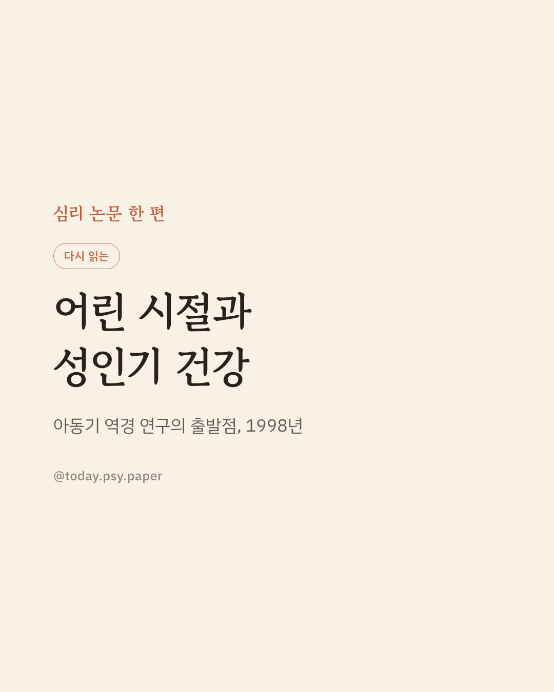
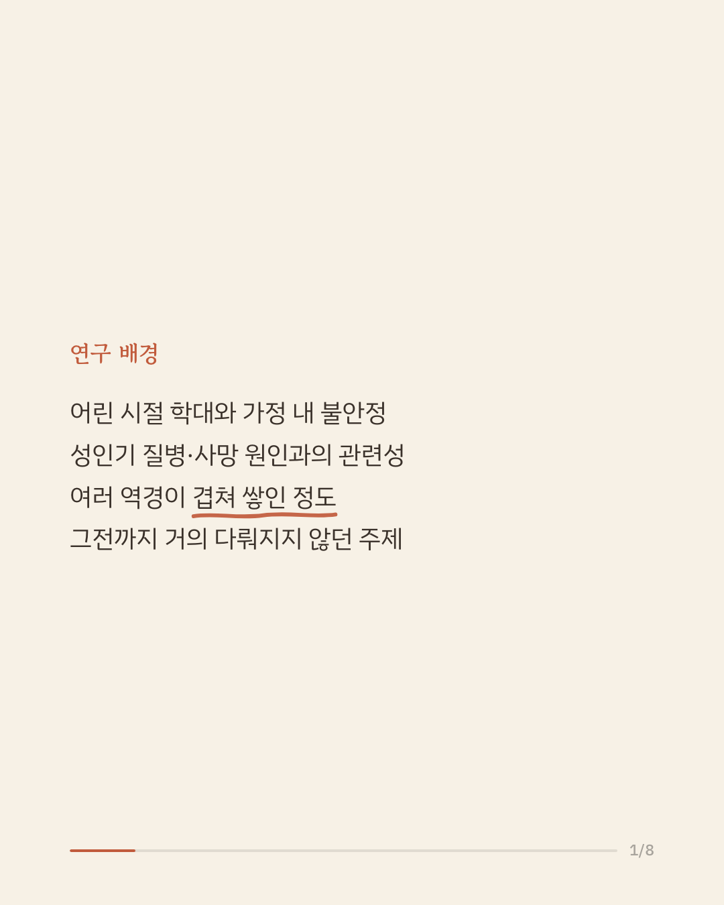
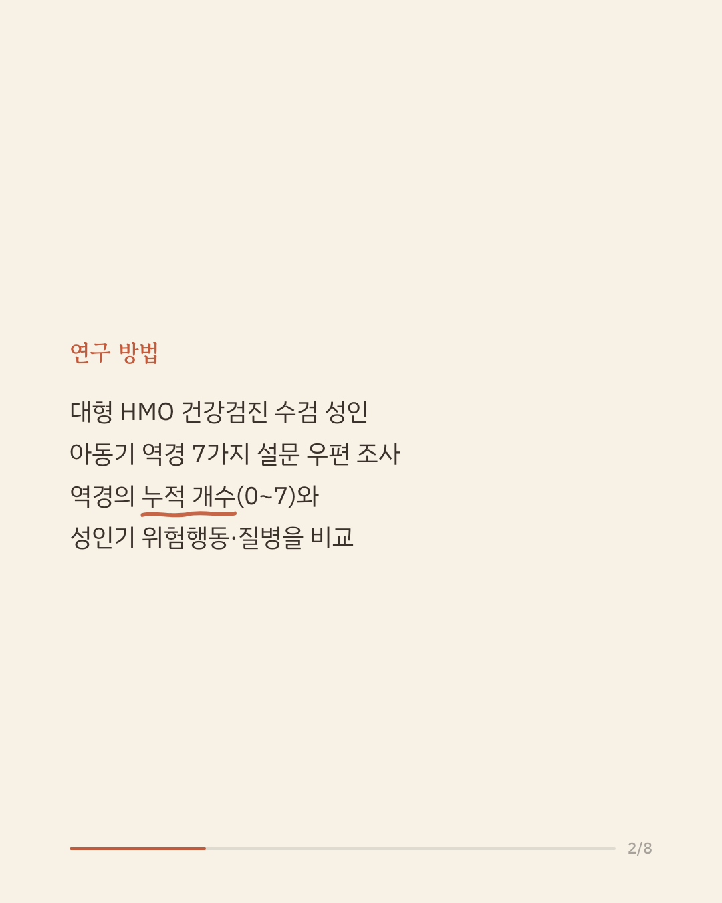
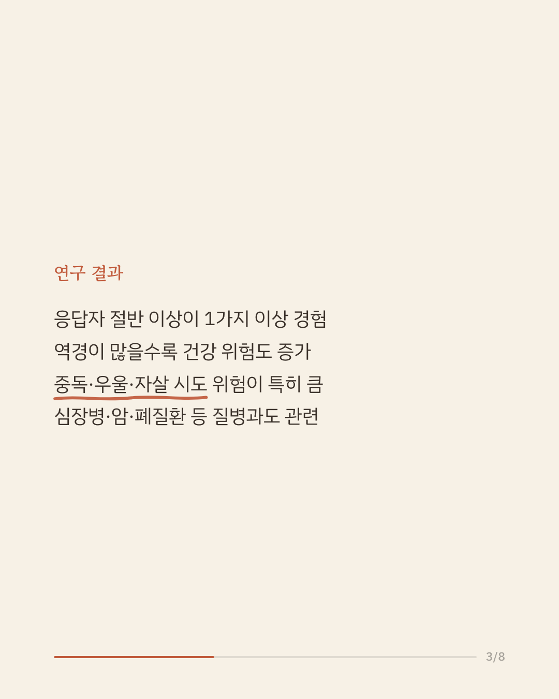
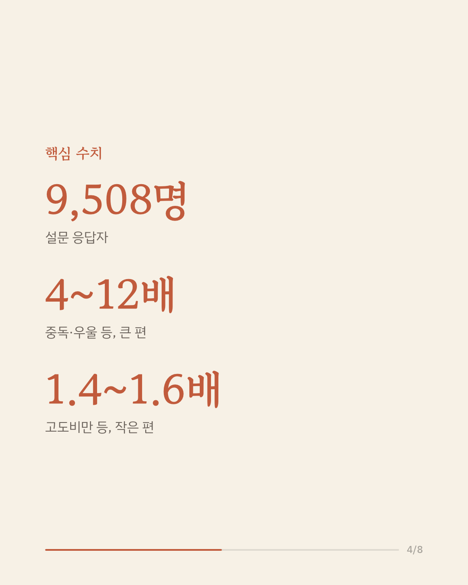
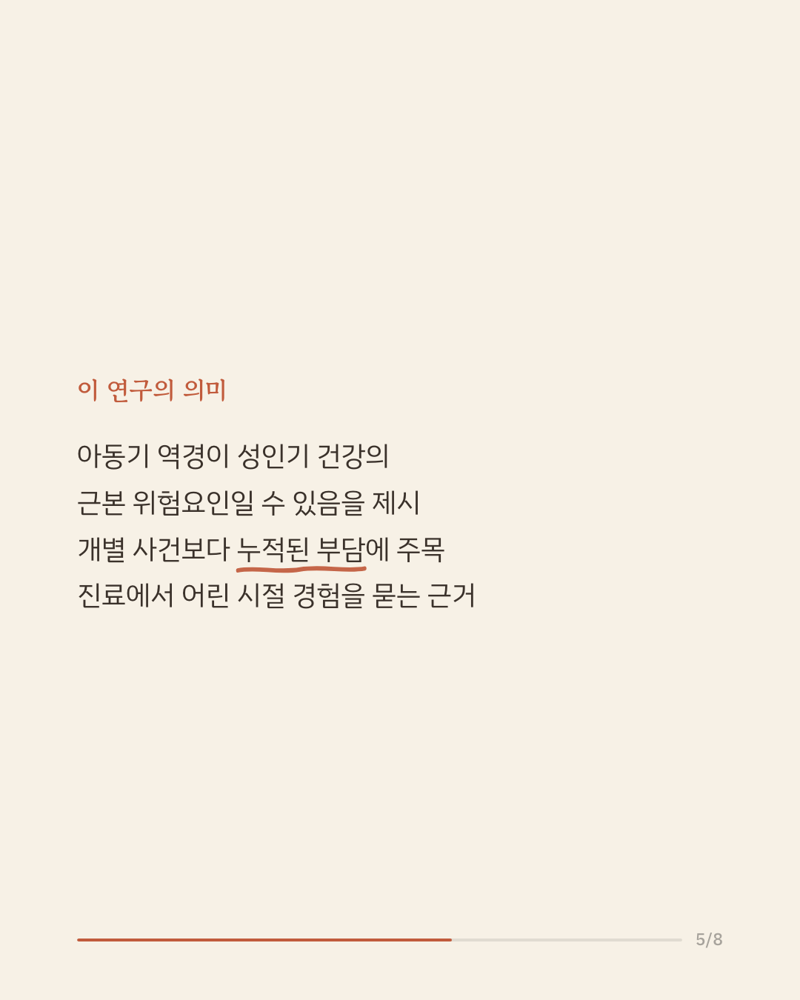
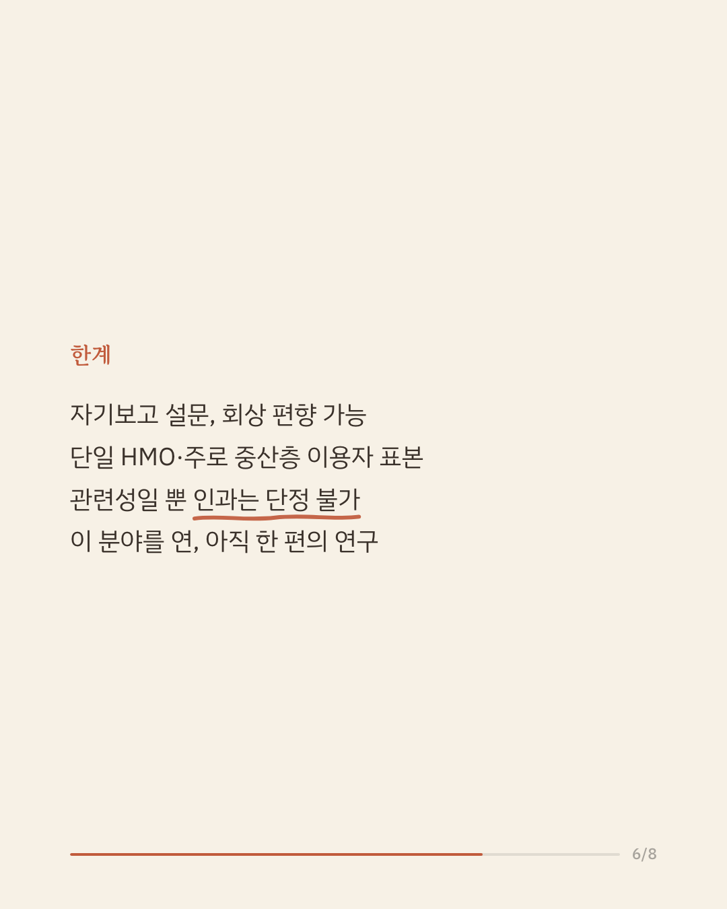
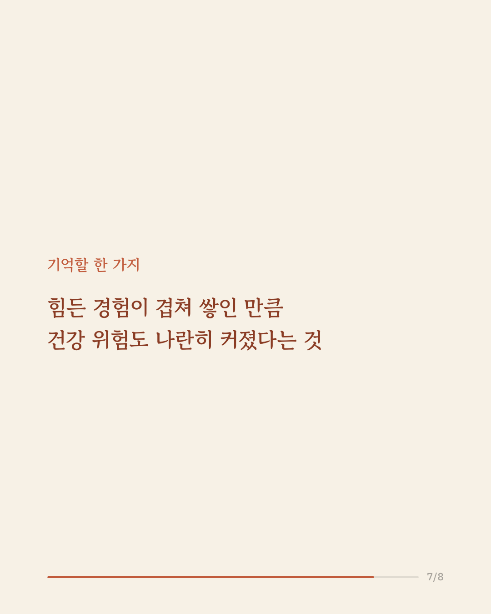
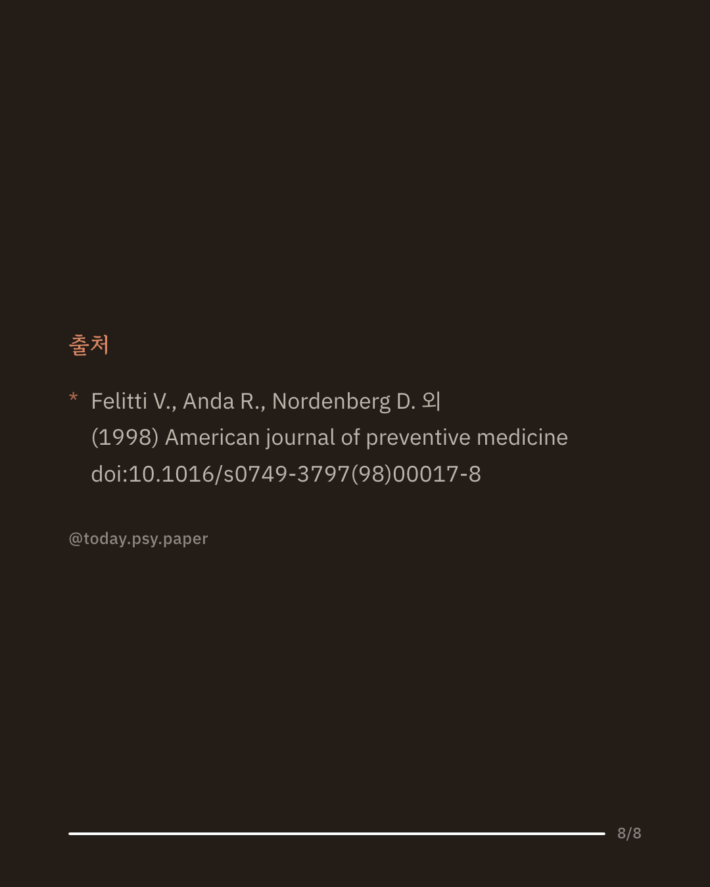

어린 시절의 학대나 방임, 불안정한 가정 환경이 어른이 된 뒤의 건강과 어떤 관련이 있는지는 오래된 물음이었습니다. 특히 이런 아동기 트라우마가 여러 개 겹쳤을 때를 함께 본 연구는 그전까지 드물었습니다. 1998년 이 연구는 대형 의료기관에서 건강검진을 받은 성인 약 9,500명에게 일곱 가지 역경 경험을 묻고, 그 개수가 성인기 건강 위험과 어떻게 이어지는지 분석했습니다. 응답자의 절반 이상이 최소 한 가지 역경을 겪었습니다. 네 가지 이상 겪은 사람은 전혀 겪지 않은 사람에 비해 알코올·약물 문제, 우울, 자살 시도 위험이 4~12배 높았고, 흡연·고도비만은 1.4~4배가량 높았습니다. 심장병, 암, 만성 폐질환 같은 질병도 역경 개수가 많을수록 단계적으로 늘어나는 양상이었습니다. 이 연구는 사건 하나하나보다 여러 어려움이 겹쳐 쌓인 정도가 이후 건강을 이해하는 데 중요할 수 있음을 보여 주었고, 진료에서 어린 시절 경험을 살피는 흐름을 열었습니다. 다만 성인이 과거를 떠올려 답한 설문이라 기억의 왜곡이 있을 수 있고, 한 곳의 의료기관 이용자만 대상으로 한 조사입니다. 단일 연구이므로 확대 해석은 조심해야 합니다. 출처: American Journal of Preventive Medicine (1998), 'Relationship of childhood abuse and household dysfunction to many of the leading causes of death in adults. The Adverse Childhood Experiences (ACE) Study.' 혹시 지금 힘든 마음이 이어진다면 정신건강 상담전화 1577-0199, 자살예방 상담전화 109에서 24시간 도움을 받을 수 있습니다. #임상심리 #아동기트라우마 #정신건강정보 #심리학연구 #예방의학
python3 publish.py 9635069